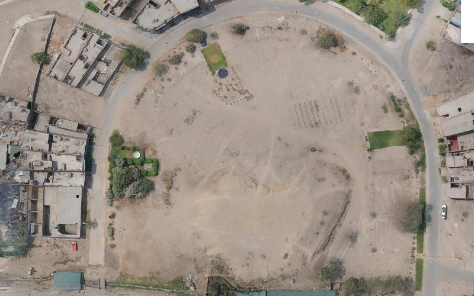

HUACADEX
Explora el patrimonio arqueológico de Lima Norte
Explora el patrimonio arqueológico de Lima Norte
Descubre la historia de uno de los sitios arqueológicos más importantes de Lima Norte y conoce el legado que dejó el antiguo señorío Colli.
Comenzar recorrido